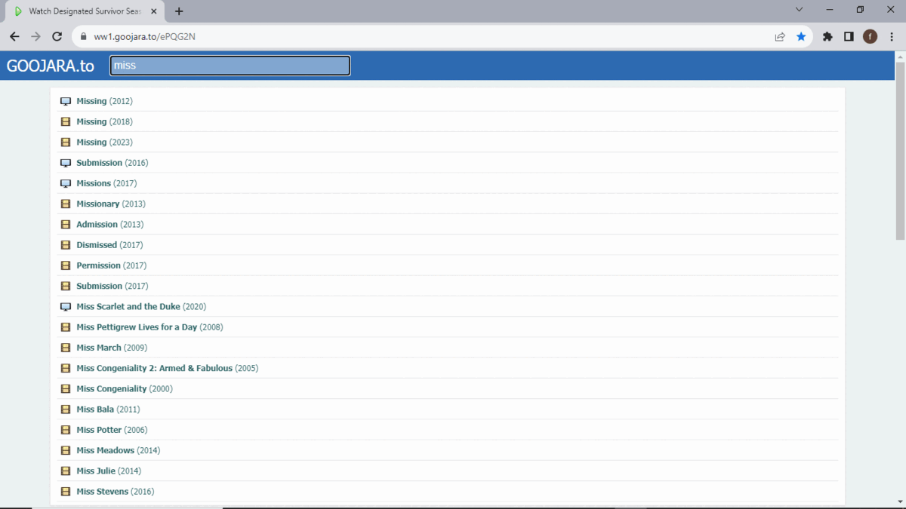

The Alpha microinteraction aims to improve the search functionality on the streamlord website, which hosts movies. Currently, the search feature lacks real-time feedback and user-friendly interactions.
The Alpha microinteraction is a targeted enhancement designed to elevate the user experience of the search functionality on the streamlord website, a platform dedicated to hosting movies. Presently, the website's search feature is marked by a few key limitations that hinder its overall usability and user-friendliness.
Firstly, the absence of real-time feedback in the current search system is a notable issue. When users interact with the search bar by typing their queries, they do not receive immediate suggestions or hints to guide their search. This lack of real-time assistance can lead to frustration and slower search experiences, especially for users who are unsure about the exact movie title they are looking for.
Additionally, the existing search interactions on streamlord lack user-friendliness. There is room for improvement in terms of how the search results are presented, how quickly users can access relevant information, and how intuitive the overall search process is. This current state of the search feature may result in users spending more time and effort than necessary to find the movies they want to watch.
The objective of the Alpha microinteraction is to address these shortcomings and provide a seamless and efficient search experience for streamlord users. By introducing real-time feedback and enhancing user interactions, we aim to make searching for movies on streamlord more intuitive, responsive, and user-centric. Ultimately, the Alpha microinteraction strives to transform the search functionality into a valuable and user-friendly tool that enhances the overall enjoyment of the streamlord platform
The microinteraction will be triggered when a user interacts with the website's search bar. Specifically, it will respond to the following events:
This event signifies the user's intent to initiate a search
The microinteraction responds dynamically in real-time as the user inputs their search query, providing suggestions and feedback.
When the user completes their query and presses Enter, the microinteraction processes the search and displays relevant results or feedback
The rules for the Alpha microinteraction include:
During the Alpha microinteraction, users will:
The Alpha microinteraction operates based on user input and the state of the search results. It does not have specific loops or modes but adapts to user actions in real-time.
Here are visuals that illustrate how the Alpha microinteraction will work:
Below is a sample, though not yet designed but show the expected improvements is another website.
